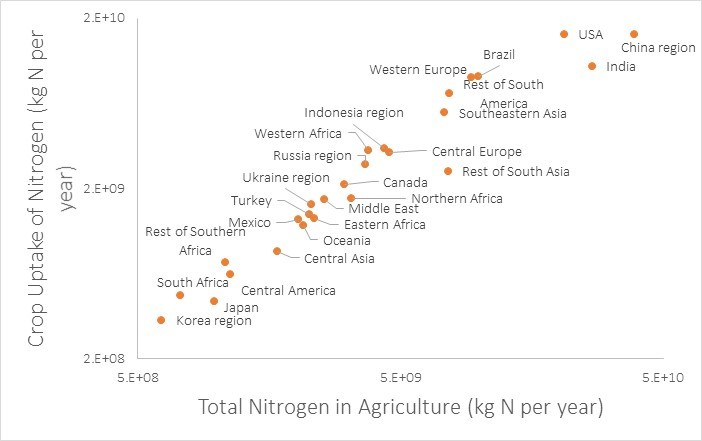
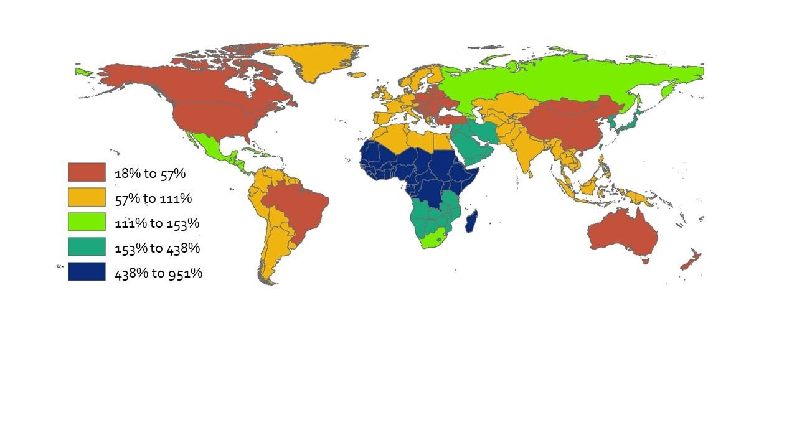
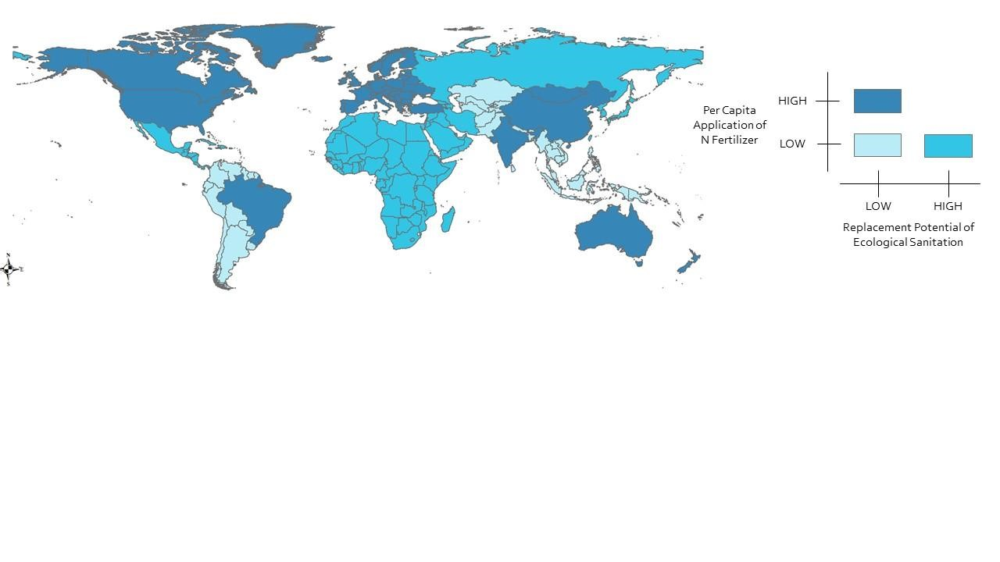
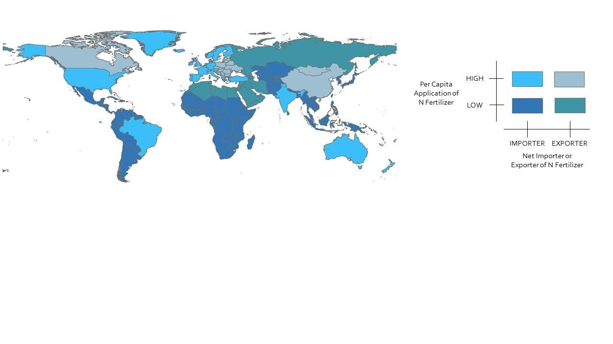

In 2010, more than half of the total nitrogen used in agriculture was sourced from synthetic nitrogenous fertilizer, and there is a strong positive relationship (R2 = 0.8235) between the total nitrogen used in agriculture and the ultimate uptake of nitrogen by crops (Fig. 1) (calculated from (Bouwman et al., 2017)).
Figure 1 Relationship between the total nitrogen used in agriculture (calculated as the sum of synthetic fertilizer, nitrogen deposition, nitrogen fixation, and manure) and the crop uptake of nitrogen. Both scales are logarithmic for clarity of data labels. Data taken from (Bouwman et al., 2017).
Given the population residing in each region and the estimated nitrogen content of compost produced from human excreta, Figure 5 shows the potential of excreta-sourced compost for replacing the current consumption of synthetic nitrogenous fertilizer. The replacement potential ranges from 18% to 951%.
Figure 2 Replacement potential of compost from human excreta to meet 2010 synthetic fertilizer application amounts. Fertilizer application amounts from (Bouwman et al., 2017)and compared with calculated values for anticipated nitrogen values in compost produced from human excreta. [Created with ArcGIS]
The replacement potential of ecological sanitation was then considered in combination with the current per capita application of nitrogenous fertilizer. A low per capita application of nitrogenous fertilizer was defined as less than the global average; a high per capita application was defined as greater than the global average. A low replacement potential of ecological sanitation is defined as less than 100% replacement; a high replacement potential is defined as greater than 100% replacement. For those regions with a currently low per capita application of fertilizer and high replacement potential, the implementation of ecological sanitation represents a net increase in nitrogen available for agriculture.
Figure 3 Identification of strategic regions for implementing ecological sanitation when considering per capita application of N fertilizer and the replacement potential of ecological sanitation. There are now regions that have both a high per capita application of nitrogenous fertilizer and a high replacement potential of ecological sanitation. For those regions, it can be assumed that ecological sanitation can substitute some, but not all, of the nitrogenous fertilizer in use. [Created with ArcGIS]
The implementation of ecological sanitation also has potential economic advantages as well. Many regions with low per capita application of nitrogenous fertilizer are importers of fertilizer, but still are unable to afford to afford enough fertilizer to increase the per capita application of fertilizer and achieve food security. Figure 7 compares the per capita application of nitrogenous fertilizer with whether the region is a net importer or exporter of nitrogenous fertilizer.
Figure 4 Comparison of N fertilizer application rates with net importer/exporter status. Low per capita application of N fertilizer is defined as less than the global average (data from (Bouwman et al., 2017)); importer or exporter status determined from FAO STAT data (Food and Agriculture Organization of the United States, n.d.). Importers were defined as those regions with import values (in USD) greater than the export values (USD). [Created with ArcGIS]
When considering Figures 2, 3, and 4 in combination, the following regions are identified which have a low per capita application of nitrogenous fertilizer, are net importers, and would be able to more than substitute current nitrogenous fertilizer with the nitrogen found in compost produced from human excreta:
● Central America
● Eastern Africa
● Japan
● Korea Region
● Mexico
● Rest of Southern Africa
● South Africa
● Western Region
In the case of these regions, there are clear economic and agricultural benefits from the implementation of ecological sanitation: these regions spent a net 1,655,016,000 USD on the import of fertilizers that could be saved with the production of compost from ecological sanitation. Additionally, the production of compost from excreta would result in a net increase in nitrogen available for use in agriculture with substantial benefits on food security and socioeconomic development.
References
Bouwman, A. F., Beusen, A. H. W., Lassaletta, L., Van Apeldoorn, D. F., Van Grinsven, H. J. M., Zhang, J., & Ittersum Van, M. K. (2017). Lessons from temporal and spatial patterns in global use of N and P fertilizer on cropland. Scientific Reports, 7(May 2016), 1–11. https://doi.org/10.1038/srep40366
Food and Agriculture Organization of the United States. (n.d.). Fertilizers - Trade Value. Retrieved from http://www.fao.org/faostat/en/#data/RV